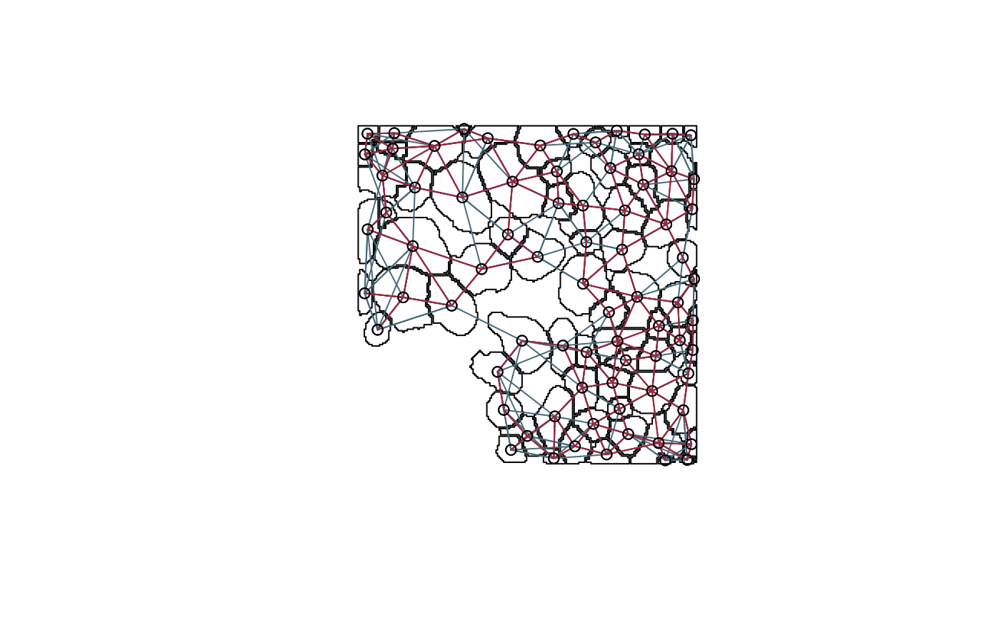
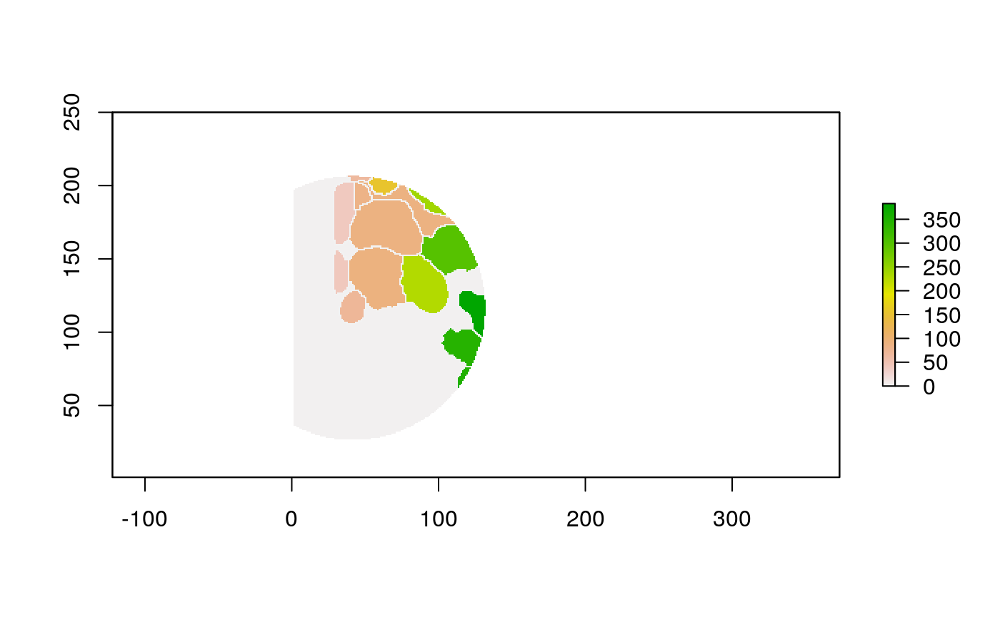

For the spatial transcriptomics data, we have segmentation masks telling us where the cells are located. The masks themselves are not particularly usable – it’s hard to reason about raw pixels. However, they give information about cell-ecosystem heterogeneity and composition, and this has scientific and clinical meaning. This script produces some intermediate outputs that move us from raw pixel information into these more ecosystem-related (and human consumable) formats,
- Polygons: We convert the raster into shapefiles, so that we can apply geometric logic to them (getting centroids, areas, borders, …). The idea is to leverage methods from spatial data analysis; instead of counties, we have cells.
- Graphs: We can think of each cell as a node and declare edges if the cells are within a certain distance / are \(K\)-nearest neighbors. This reduces the raw image information to a network of interacting cells.
- Derived Statistics: For either polygons or graphs, we can compute hand-crafted statistics from local neighborhoods, like the proportion of the local neighborhood that’s background.
Here are the packages we’ll use. Of note are raster for working with spatial images, sf, spdep, and stars for manipulating polygon data, and are igraph for network processing,
knitr::opts_chunk$set(message = FALSE, warning = FALSE)
library("SingleCellExperiment") library("dplyr") library("forcats") library("ggplot2") library("igraph") library("raster") library("readr") library("reshape2") library("sf") library("spdep") library("stars") library("stringr") library("BIRSBIO2020.scProteomics.embeddings") theme_set(theme_bw() + theme(panel.grid=element_blank()))
First, we’ll download all the data, if they’re not already present in the $HOME/Data folder. We’ll also crop to \(250 \times 250\) subsets of the raw samples, so that the vignette can run quickly.
data_dir <- file.path(Sys.getenv("HOME"), "Data") data_paths <- download_data(data_dir) loaded_ <- load_mibi(data_dir) subsample <- spatial_subsample(loaded_$tiffs, loaded_$mibi, 250)
## [1] "cropping 1/41"
## [1] "cropping 2/41"
## [1] "cropping 3/41"
## [1] "cropping 4/41"
## [1] "cropping 5/41"
## [1] "cropping 6/41"
## [1] "cropping 7/41"
## [1] "cropping 8/41"
## [1] "cropping 9/41"
## [1] "cropping 10/41"
## [1] "cropping 11/41"
## [1] "cropping 12/41"
## [1] "cropping 13/41"
## [1] "cropping 14/41"
## [1] "cropping 15/41"
## [1] "cropping 16/41"
## [1] "cropping 17/41"
## [1] "cropping 18/41"
## [1] "cropping 19/41"
## [1] "cropping 20/41"
## [1] "cropping 21/41"
## [1] "cropping 22/41"
## [1] "cropping 23/41"
## [1] "cropping 24/41"
## [1] "cropping 25/41"
## [1] "cropping 26/41"
## [1] "cropping 27/41"
## [1] "cropping 28/41"
## [1] "cropping 29/41"
## [1] "cropping 30/41"
## [1] "cropping 31/41"
## [1] "cropping 32/41"
## [1] "cropping 33/41"
## [1] "cropping 34/41"
## [1] "cropping 35/41"
## [1] "cropping 36/41"
## [1] "cropping 37/41"
## [1] "cropping 38/41"
## [1] "cropping 39/41"
## [1] "cropping 40/41"
## [1] "cropping 41/41"mibi_sce <- subsample$exper sample_id <- params$sample_id im <- subsample$ims[[as.character(sample_id)]] cell_data <- colData(mibi_sce) %>% as.data.frame() %>% tidyr::unite(scell, SampleID, cellLabelInImage, remove = FALSE) %>% mutate( cell_type = cell_type(mibi_sce), cell_group = fct_lump(cell_type, prop = 0.05) ) %>% filter(SampleID == sample_id)
Polygonization
It can be helpful to work directly with polygon geometries, rather than the original raster image. You can then use any logic you’d have used for manipulating geographic shapefiles, for example. The block below converts the
polys <- polygonize(im) %>% inner_join(cell_data) %>% group_by(cellLabelInImage) %>% # some regions get split into two adjacent polys --> merge inner_join(cell_data) %>% group_by(cellLabelInImage) %>% summarise_all(function(x) { x[1] })
With these shapefiles, we can use geographic plotting tools. For example, this plots the immune group for each geometry.
ggplot(polys) + geom_sf(aes(fill=cell_group)) + scale_x_continuous(expand = c(0, 0)) + scale_y_continuous(expand = c(0, 0)) + theme(legend.position = "bottom")

Graph Construction
Sometimes we care less about the locations and sizes of individual cells than their connectivity and mixing structure. For example, in the plot below, nodes are located at the original cell positions, and contiguity and knn edges are blue and red, respectively – for some analysis, it might be enough to work with this induced network alone.
nb_contig <- poly2nb(polys, snap=1) # contiguity graph coords <- polys %>% .[["geometry"]] %>% st_centroid() %>% st_coordinates() nb_knn <- knn2nb(knearneigh(coords, k = 5)) # knn graph plot(polys$geometry[seq_len(nrow(polys))]) plot(nb_knn, coords, add=T, col="#476a79") plot(nb_contig, coords, add=T, col="#97293f")

We can turn this into a more familiar igraph object, for access to the usual graph manipulation routines. The steps above have been wrapped in a small helper function extract_graph, so we can apply it on many patients easily.
G <- extract_graph(polys) plot(G, vertex.size=3, edge.arrow.size=0, vertex.label=NA)
Raster Window Features
With these new data structures, we can compute some cell-level summaries. First, let’s look at features defined on windows centered around individual cells.
The function below applys some cell-specific function to the buffered window around the cell with label cell_id. For example, we can use it to get the proportion of each type of immune group within a window around that cell. This can be used to define a localized cell heterogeneity for use in downstream analysis. We plot each of the image subwindows surrounding a single cell.
For example, below, we show the proportion of each cell’s image neighborhood that belongs to background, effectively measuring the local density of cells in the tissue.
cell_ids <- unique(polys$cellLabelInImage) loop_stats(cell_ids[1:10], "raster", im, polys, background_prop)


## # A tibble: 20 x 3
## cellLabelInImage background props
## <dbl> <chr> <dbl>
## 1 38 FALSE 0.662
## 2 38 TRUE 0.338
## 3 39 FALSE 0.608
## 4 39 TRUE 0.392
## 5 40 FALSE 0.433
## 6 40 TRUE 0.567
## 7 48 FALSE 0.662
## 8 48 TRUE 0.338
## 9 65 FALSE 0.694
## 10 65 TRUE 0.306
## 11 69 FALSE 0.357
## 12 69 TRUE 0.643
## 13 83 FALSE 0.665
## 14 83 TRUE 0.335
## 15 88 FALSE 0.597
## 16 88 TRUE 0.403
## 17 89 FALSE 0.474
## 18 89 TRUE 0.526
## 19 100 FALSE 0.708
## 20 100 TRUE 0.292We can use the same wrapper to study the local cell mixing proportions.
loop_stats(cell_ids[1:10], "raster", im, polys, type_props)

## # A tibble: 22 x 3
## cellLabelInImage cellType props
## <dbl> <chr> <dbl>
## 1 38 Keratin-positive tumor 0.628
## 2 38 <NA> 0.372
## 3 39 Keratin-positive tumor 0.574
## 4 39 <NA> 0.426
## 5 40 Keratin-positive tumor 0.407
## 6 40 <NA> 0.593
## 7 48 Keratin-positive tumor 0.621
## 8 48 <NA> 0.379
## 9 65 Keratin-positive tumor 0.653
## 10 65 <NA> 0.347
## # … with 12 more rowsNeighbor Features
Alternatively, we could ignore the spatial information entirely, and summarize cells according to the properties of their neighbors. Here are the same two statistics, computed by looking at the graph alone, and ignoring cell size entirely.
loop_stats(cell_ids[1:10], "graph", G, polys, background_prop)
## # A tibble: 10 x 3
## cellLabelInImage background props
## <dbl> <chr> <dbl>
## 1 38 FALSE 1
## 2 39 FALSE 1
## 3 40 FALSE 1
## 4 48 FALSE 1
## 5 65 FALSE 1
## 6 69 FALSE 1
## 7 83 FALSE 1
## 8 88 FALSE 1
## 9 89 FALSE 1
## 10 100 FALSE 1loop_stats(cell_ids[1:10], "graph", G, polys, type_props)
## # A tibble: 10 x 3
## cellLabelInImage cellType props
## <dbl> <chr> <dbl>
## 1 38 Keratin-positive tumor 1
## 2 39 Keratin-positive tumor 1
## 3 40 Keratin-positive tumor 1
## 4 48 Keratin-positive tumor 1
## 5 65 Keratin-positive tumor 1
## 6 69 Keratin-positive tumor 1
## 7 83 Keratin-positive tumor 1
## 8 88 Keratin-positive tumor 1
## 9 89 Keratin-positive tumor 1
## 10 100 Keratin-positive tumor 1